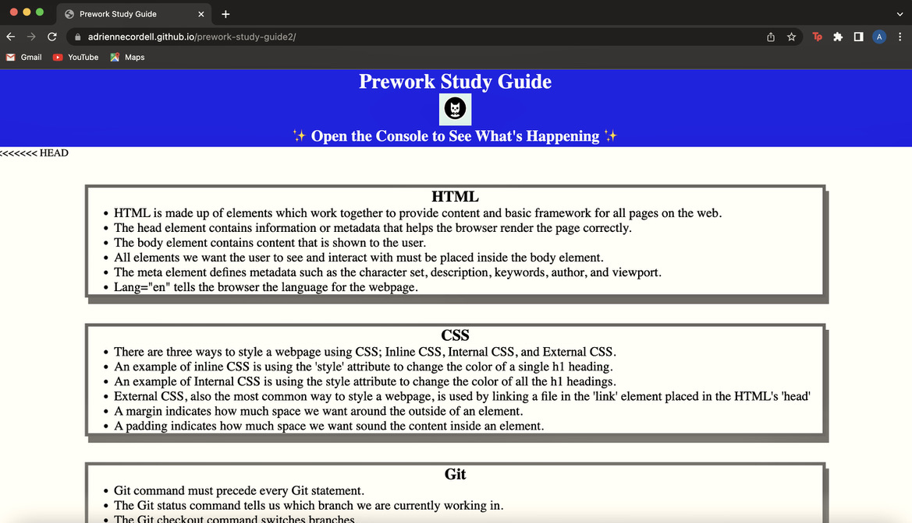
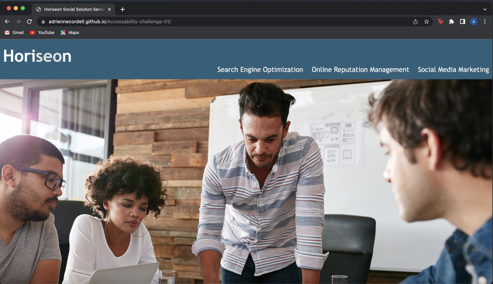
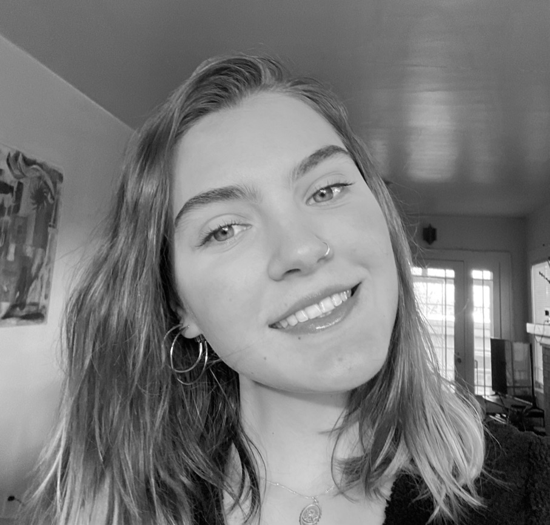

My Projects

This is an image of my very first deployed website. This was also the first website I coded. If you click on the image it will redirect you to my Prework-Study-Guide application and you can take a better look at all the features I worked so very hard to develop.

The is an image to the right is my second project. This was a project I created using starter code that allowed me to focus on a few elements to really fine tune my skills. If you click on the image you will be redirected to the Horison webpage application.
 The is an image to the left is my first group project. This was a project we created using javascript and web API's to create a really dynamic webpage.
The is an image to the left is my first group project. This was a project we created using javascript and web API's to create a really dynamic webpage.
About Me

Hi! Please allow me to introduce myself, my name is Adrienne Cordell and I am a student at the University of Wisconsin. I am 22 years-old and I am from seattle. I started my coding journey in August of 2022. For a long time it has been a dream of mine to be a web developer and I am so excited to be on ths journey. As the weeks go on and I continue to learn more this portfolio will continue to improve.
Contact Me
If you would like to contact me regarding my work please feel free to email me at: adrienne.cordellac@gmail.com